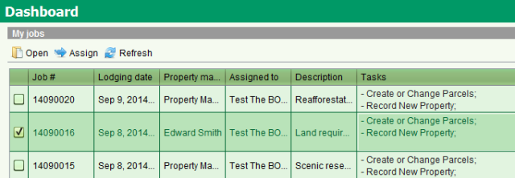
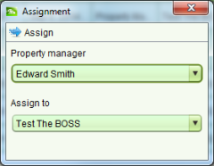

Assign a User to a Job
SOLA State Land provides case management functionality that ensures only the user assigned
to a job can  Start and
Start and  Complete job tasks. By default jobs are
automatically assigned to the user that lodges the job. To assign a job to a different user,
check the checkbox beside the job you want to reassign in the My jobs list of the Dashboard.
Complete job tasks. By default jobs are
automatically assigned to the user that lodges the job. To assign a job to a different user,
check the checkbox beside the job you want to reassign in the My jobs list of the Dashboard.

Selecting a Job to Assign
This will enable  Assign tool allowing you
to open the Assignment dialog.
Assign tool allowing you
to open the Assignment dialog.

Job Assignment
In the Assign to dropdown, select the appropriate user and click Assign again. A confirmation message will
display stating the job has been assigned. Click OK the message to return to the Dashboard
screen.
Notes
-
-
The Assign action is also available from the Job Details screen
-
If the job you need to reassign is not displayed in your My jobs list on the Dashboard,
you can use the Job Search screen to locate the job and reassign it to a different user
using the steps described above.
-
Where there are a large number of users, the Property Manager dropdown can be used to
filter the list of users in the Assign to dialog to those users that are part of the
selected Property Manager team.
-
You can only assign jobs to another user if you have the Assign to Others security
role. If you do not have this role, you will not be able to change the Assign to
dropdown (it will be preset with your name). The Property Manager dropdown will list
all teams that you are part of and you can change this if appropriate.
-
Both the Dashboard and Job Search can be used to reassign multiple jobs at the same
time. Simply check the checkbox beside multiple jobs before clicking Assign. All checked jobs will be assigned to
the user selected in the Assignment dialog.
-
Unless you have the Assign to Others security role, you will only be able to reassign
jobs that you are currently assigned to
Also See
-
-
State Land Desktop Screens